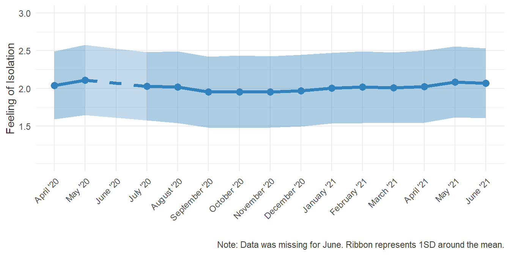
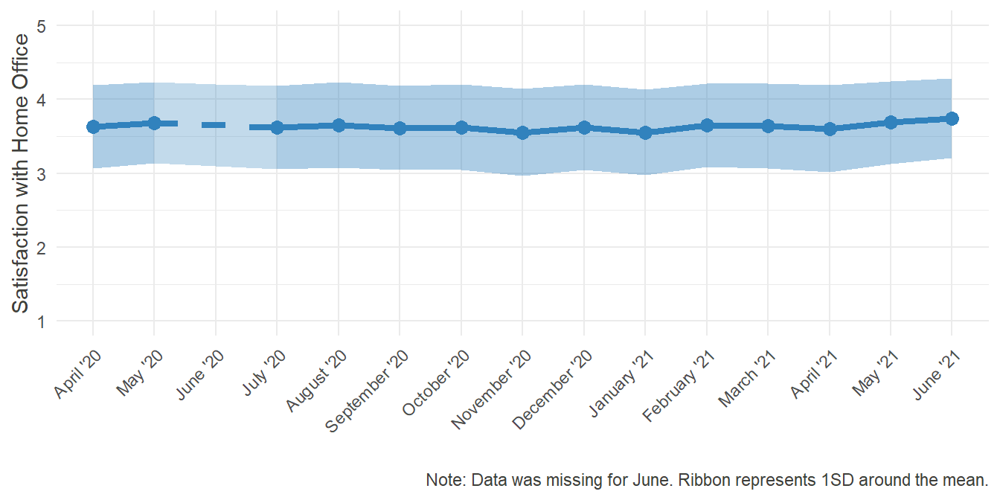

Home Office
1 Introduction
With the increasing digitalization of work, the idea of working from home gained more and more traction. For some, it’s a convenience in the face of unnecessary commuting to work (e.g. when you’re a programmer, who doesn’t need to come into work every day while working on a software), for others it can be a crucial part in balancing out work and family demands. It surely has its advantages and disadvantages, both for the worker and for the company, but having it as a possibility increases flexibility and adaptability.
With the global COVID-19 pandemic, working from home drastically shifted from mere convenience to a necessity in many cases, as social distancing guidelines were imposed and businesses had to shut down. This put additional interest into the topic of Home Office - how it’s being implemented, what effect it has on the workers and how it can be improved on.
Beginning in our third wave of inquiry in April, we started to ask our participants various questions about their experience regarding Home Office. With the exception of June, where a part of the questions needed to be reduced in order to gather data on work and ageing, we then continued presenting our participants the same items monthly. Below, You can see some descriptive statistics about various topics connected to working from home. Please note that these results present only an overview of our data, and causal interpretations can exclusively be made after rigorous analysis, published elsewhere. Feel free, however, to get inspirations for future research!
2 Average Time Spent in Home Office
Plot
home_office_T1 = data.frame(
label = c("In Home Office", "Out of Home Office"),
percent = round(c(mean(data_HO$T1_home_office, na.rm = T),100-mean(data_HO$T1_home_office, na.rm = T)), digits = 2)
)
home_office_T1 <- home_office_T1 %>%
arrange(desc(label)) %>%
mutate(ypos = cumsum(percent)- 0.5*percent)
home_office_T1$ypos = c(44.2,92.5) #Nicer positioning of the labels inside the Pie-Chart
mean_HO_T1 = ggplot(home_office_T1, aes(x="", y=percent, fill = label))+
geom_bar(width = 1, stat = "identity", color = "white", alpha = .9) +
scale_fill_manual(values = c("#bdd7e7","#3182bd"))+
coord_polar("y", direction = -1)+
geom_text(aes(y = ypos, label = paste0(percent, '%')), color = "grey32", size=6) +
guides(fill=guide_legend(title="Average proportion of worktime spent...", title.position = "top"))+
theme_void()+
theme(legend.position="bottom", legend.text = element_text(size = 14), legend.title = element_text(size = 14.5) )
mean_HO_T1
density_HO_T1 = ggplot(data_HO, aes(T1_home_office))+
theme_classic()+
geom_histogram(binwidth=10,col="#3182bd", fill = "#6baed6", alpha = .4)+
geom_vline(aes(xintercept=mean(T1_home_office, na.rm=T)), linetype="dashed", size= 0.5)+ #Line representing the mean
labs(x="Percentage of worktime spent in Home Office", y = "Amount of participants")+
scale_x_continuous(breaks = seq(0,100,10), labels = paste0(seq(0,100,10), '%')) +
scale_y_continuous(breaks=seq(0, 1500, 250))+
theme(axis.text=element_text(size=12), axis.title = element_text(size = 14))
density_HO_T1

Percentage of time worked from home in December 2019
Additional Information
In December of 2019, when the coronavirus was just one of many news stories from abroad, we coincidentally asked the participants of our study:
“What percentage of Your worktime do You work from home (Home Office)?”
The following graphs show the average proportion of time spent in Home Office and how the percentages were distributed back then.
## For details on the code for the plots, please change to the "Plots"-Tab and unfold the code there. ##
mean_HO_T1
density_HO_T1

Percentage of time worked from home in December 2019
As can be seen, before the COVID-19 Crisis hit, work from home was rather sparse. Only 725 of the 1639 participants, who answered this question, had indicated that they worked from home at all (equaling 44.23%)
2.1 Development over Time
Plots
#HO6
HO_Perc = data_HO[,grep(names(data_HO), pattern = "_HO6", value = T)]
HO_Perc_rel = data.frame(
month = as.factor(months_compl),
mean_perc = c(
mean(HO_Perc$T3_HO6, na.rm = T),
mean(HO_Perc$T4_HO6, na.rm = T),
NA,
mean(HO_Perc$T6_HO6, na.rm = T),
mean(HO_Perc$T7_HO6, na.rm = T),
mean(HO_Perc$T8_HO6, na.rm = T),
mean(HO_Perc$T9_HO6, na.rm = T)
),
sd_perc = c(
sd(HO_Perc$T3_HO6, na.rm = T),
sd(HO_Perc$T4_HO6, na.rm = T),
NA,
sd(HO_Perc$T6_HO6, na.rm = T),
sd(HO_Perc$T7_HO6, na.rm = T),
sd(HO_Perc$T8_HO6, na.rm = T),
sd(HO_Perc$T9_HO6, na.rm = T)
)
) # Data-Frame with the means and standard deviations of the percentages of time Worked in Home Office, Long Format (Because of the many NAs, ggplots stat = "mean" could have shown errrors)
HO_Perc_rel$missing = c(NA, HO_Perc_rel[2,2],mean(c(HO_Perc_rel[2,2],HO_Perc_rel[4,2])),HO_Perc_rel[4,2],NA,NA,NA) #Extrapolating the missing value in June to make a separate connecting line in the graph
HO_Perc_rel$mis_sd = c(NA, HO_Perc_rel[2,3],mean(c(HO_Perc_rel[2,3],HO_Perc_rel[4,3])),HO_Perc_rel[4,3],NA,NA,NA)
HO_Perc_rel$sd_bottom = HO_Perc_rel$mean_perc-HO_Perc_rel$sd_perc/2 #for the ribbon
HO_Perc_rel$sd_upper = HO_Perc_rel$mean_perc+HO_Perc_rel$sd_perc/2
HO_Perc_rel$mis_sd_bottom = HO_Perc_rel$missing-HO_Perc_rel$mis_sd/2
HO_Perc_rel$mis_sd_upper = HO_Perc_rel$missing+HO_Perc_rel$mis_sd/2
HO_Perc_plot = ggplot(HO_Perc_rel, aes(x=month, y = mean_perc)) +
geom_line(aes(group=1, color = "#3182bd"), col= "#3182bd", size = 1.5)+
geom_line(aes(x=month, y=missing, group =1,color = "#3182bd"), col= "#3182bd", size = 1.5, linetype = "dashed" )+
geom_point(col= "#3182bd", size = 3)+
geom_ribbon(aes(y=mean_perc, ymin = sd_bottom, ymax = sd_upper, group = 1),fill="#3182bd", alpha=0.4) +
geom_ribbon(aes(y=missing, ymin = mis_sd_bottom, ymax = mis_sd_upper, group = 1),fill="#3182bd", alpha=0.3) +
coord_cartesian(ylim = c(0,60))+
theme_minimal()+
scale_x_discrete(limits = months_compl, name ="" )+
scale_y_continuous(breaks = seq(0,60,10), labels = paste0(seq(0,60,10), "%"), name = "Percentage of a week worked from home")+
labs(caption = "Note: Data was missing for June. Ribbon represents 1SD around the mean.")
HO_Perc_plot
HO_Perc_long = gather(HO_Perc, month, percentage)
HO_Perc_long$month = factor(HO_Perc_long$month, levels = names(HO_Perc), labels = months_miss)
## Here are some attempts to show the distribution of the percentages over time, to show that the middle part of the distribution remained sparse and only the right border grew, accounting for the overall increase in Home Office time. But I am far from satisfied with the result. --> Relevant?
HO_Perc_ani = ggplot(HO_Perc_long, aes(percentage)) +
theme_classic()+
geom_histogram(binwidth=10,col="#3182bd", fill = "#6baed6", alpha = .4)+
labs(x="Percentage of worktime spent in Home Office", y = "Amount of participants")+
scale_x_continuous(breaks = seq(0,100,10), labels = paste0(seq(0,100,10), '%')) +
scale_y_continuous(breaks=seq(0, 1500, 250))+
theme(axis.text=element_text(size=12), axis.title = element_text(size = 14)) +
transition_states(month,
transition_length = 2,
state_length = 1) +
ggtitle('{closest_state}') +
ease_aes('cubic-in-out')
animate(HO_Perc_ani, renderer = gifski_renderer())
HO_Perc_dens = ggplot(HO_Perc_long, aes(percentage, y=..density.., fill = month, color = month)) +
theme_classic()+
theme(legend.title = element_blank())+
geom_density(alpha = .1)+
labs(x="Percentage of worktime spent in Home Office", y = "Density", legend = NULL)+
scale_x_continuous(breaks = seq(0,100,10), labels = paste0(seq(0,100,10), '%')) +
scale_fill_brewer(palette="Blues", direction = -1) +
scale_color_brewer(palette="Blues", direction = -1) +
theme(axis.text=element_text(size=12), axis.title = element_text(size = 14))
HO_Perc_dens

Additional Information
Since December, the first time we asked our participants about their work in the Home Office again was in April of 2020, and then, with the exception of June, monthly. Specifically, we wanted to know:
“In the past 4 weeks (Since the beginning of …): What percentage of Your average work week did you spend in Home Office?”
## For details on the code for the plots, please change to the "Plots"-Tab and unfold the code there. ##
HO_Perc_plot
Notably and expectedly, the mean time spent in Home Office grew as the pandemic unfolded. At its peak in May, the percentage was three times as high as in December. Furthermore, as infection rates dropped in the summer and some form of “new normality” emerged, working from home steadily declined. Remembering, however, how disproportionate the various rates were distributed in December, it would be interesting to look at how the distribution changed over time:
## For details on the code for the plots, please change to the "Plots"-Tab and unfold the code there. ##
animate(HO_Perc_ani, renderer = gifski_renderer())
HO_Perc_dens

Looking at these distributions it grows clear that the increased percentage worked from home was mainly driven by the outer right part of the distribution, i.e. the people who worked from home entirely, while the rest continued working fully at their regular workplace.
Moreover, the decrease over time seems to be attributed to the workers, who returned from their Home Offices, while the middle of the distribution remained largely unchanged. Note that the steep increase in October was partially due to a resampling of new participants in order to compensate for the gradual dropout.
3 Possibility to Work from Home
Plots
# 1 = Not possible, 2 = Possible
HO_Pos_T3 = round(data.frame(
pre = c(length(which(data_HO$T3_HO1 == 2)),length(which(data_HO$T3_HO1 == 1 ))) /length(which((data_HO$T3_HO1 != "NA"))),
post = c(length(which(data_HO$T3_HO4 == 2)),length(which(data_HO$T3_HO4 == 1 ))) /length(which((data_HO$T3_HO4 != "NA")))
)*100,digits = 2)
HO_Pos_T3 <- HO_Pos_T3 %>%
mutate(ypos_pre = cumsum(pre)- 0.5*pre) %>% #Positions for the labels inside the Pie-Chart
mutate(ypos_post = cumsum(post)- 0.5*post)
HO_Pos_T3$labels = c("Yes","No")
HO_Pos_pre = ggplot(HO_Pos_T3, aes(x="", y= pre, fill = labels)) +
geom_bar(width = 1, stat = "identity", color = "white", alpha = .9) +
scale_fill_discrete(breaks=c("Yes","No")) +
scale_fill_manual(values = c("#3182bd","#bdd7e7"))+
coord_polar("y")+
geom_text(aes(y = ypos_pre, label = paste0(pre, '%')), color = "grey32", size=6) +
guides(fill=guide_legend(title="Before the Pandemic", title.position = "top"))+
theme_void()+
theme(legend.position="bottom", legend.text = element_text(size = 14), legend.title = element_text(size = 14.5) )
HO_Pos_pre
HO_Pos_post = ggplot(HO_Pos_T3, aes(x="", y= post, fill = labels)) +
geom_bar(width = 1, stat = "identity", color = "white", alpha = .9) +
scale_fill_manual(values = c("#3182bd","#bdd7e7"))+
coord_polar("y")+
geom_text(aes(y = ypos_post, label = paste0(post, '%')), color = "grey32", size=6) +
guides(fill=guide_legend(title="Since March", title.position = "top"))+
theme_void()+
theme(legend.position="bottom", legend.text = element_text(size = 14), legend.title = element_text(size = 14.5))
HO_Pos_post

Allowed to work from home
Additional Information
One important aspect when talking about Home Office is the extend, to which employers allow their employees to work from home. A manager could have many reasons not to give that permission, such as fearing loss of control over subordinates, thinking that work won’t be done in time, doubts about feasibility or just personal preference. Looking at how the constraint of the pandemic and the measures undertaken by the German government influenced the permission of employers might give an insight into how sound those arguments against Home Office really were.
In March 2020 the coronavirus hit Germany. Many businesses had to shut down, public life was reduced to a bare minimum. In April, we asked our participants two questions:
“Before the COVID-19 Pandemic (Corona-Crisis): In general, did You have the possibility to work in Home Office?”
“During the past 4 weeks (Since the beginning of March): In general, did You have the possibility to work in Home Office?”
## For details on the code for the plots, please change to the "Plots"-Tab and unfold the code there. ##
HO_Pos_pre
HO_Pos_post

Allowed to work from home
3.1 Permission over Time
Plot
HO_Perm = data_HO[,c("ID",grep("_HO4",names(data_HO), value = T))]
HO_Perm_rel = data.frame(
perm = round(c((length(which(HO_Perm$T3_HO4 == 2))/length(which((HO_Perm$T3_HO4 != "NA")))),
(length(which(HO_Perm$T4_HO4 == 2))/length(which((HO_Perm$T4_HO4 != "NA")))),
NA,
(length(which(HO_Perm$T6_HO4 == 2))/length(which((HO_Perm$T6_HO4 != "NA")))),
(length(which(HO_Perm$T7_HO4 == 2))/length(which((HO_Perm$T7_HO4 != "NA")))),
(length(which(HO_Perm$T8_HO4 == 2))/length(which((HO_Perm$T8_HO4 != "NA")))),
(length(which(HO_Perm$T9_HO4 == 2))/length(which((HO_Perm$T9_HO4 != "NA"))))
)*100, digits = 2),
month = as.factor(months_compl)
)
HO_Perm_rel$missing = c(NA,HO_Perm_rel[2,1],mean(c(HO_Perm_rel[2,1],HO_Perm_rel[4,1])),HO_Perm_rel[4,1],NA,NA,NA)
HO_Perm_plot = ggplot(HO_Perm_rel, aes(x=month, y = perm)) +
geom_line(aes(group=1, color = "#3182bd"), col= "#3182bd", size = 1.5)+
geom_line(aes(x=month, y=missing, group =1,color = "#3182bd"), col= "#3182bd", size = 1.5, linetype = "dashed" )+
geom_point(col= "#3182bd", size = 3)+
geom_area(aes(group=1), fill="#3182bd", alpha=0.4) +
coord_cartesian(ylim = c(20,60))+
theme_minimal()+
scale_x_discrete(limits = months_compl, name ="" )+
scale_y_continuous(breaks = seq(20,60,10), labels = paste0(seq(20,60,10), "%"), name = "Allowed to work from home")+
labs(caption = "Note: Data was missing for June.")
HO_Perm_plot
Additional Information
Since June life in Germany started gradually coming back to a new normality. Businesses were allowed to reopen, albeit under strict regulations and with individual concepts for how to uphold these regulations (so called “hygiene concepts”). Regarding the previous graphs it becomes obvious, that before the pandemic, only few people could work from home, but when it became inevitable, the possibility suddenly emerged in many cases, raising questions about why it was not possible before.
It would be interesting to see, how this general permission fares over time:
## For details on the code for the plots, please change to the "Plots"-Tab and unfold the code there. ##
HO_Perm_plot
Comparable to the first section of this website, the possibility to work from home peaked in May and steadily declined until September after that, showing that in some cases, the workers were given this permission only as long as it was imperative by law or public pressure. Notably, the level is still far from the 22% it was before the pandemic. Furthermore, there is now a coordinated effort by the German Federal Minister for Labour and Social Affairs Hubertus Heil to pass legislation introducing the “right to Home Office”. Regardless of its success in parliament, it illustrates how the topic of Home Office and the possibility to work there gained traction through the pandemic.
4 Working from Home - but Where?
Plot
# 1 = own, separated Room
# 2 = Designated spot elsewhere
# 3 = Changing places at home depending on the need
# 6 = Other:
# 0 = Missing
HO_loc = data_HO[,grep("_HO18",names(data_HO), value = T )]
HO_loc_prop <- data.frame(
row.names = c("Own Room","Designated Spot","Changing","Other"),
April = plyr::count(df = HO_loc, vars = "T3_HO18")[2:5,2]/length(which(HO_loc$T3_HO18 > 0)),
May = plyr::count(df = HO_loc, vars = "T4_HO18")[2:5,2]/length(which(HO_loc$T4_HO18 > 0)),
July = plyr::count(df = HO_loc, vars = "T6_HO18")[2:5,2]/length(which(HO_loc$T6_HO18 > 0)),
August = plyr::count(df = HO_loc, vars = "T7_HO18")[2:5,2]/length(which(HO_loc$T7_HO18 > 0)),
September = plyr::count(df = HO_loc, vars = "T8_HO18")[2:5,2]/length(which(HO_loc$T8_HO18 > 0)),
October = plyr::count(df = HO_loc, vars = "T9_HO18")[2:5,2]/length(which(HO_loc$T9_HO18 > 0))
)
HO_loc_prop_long = gather(HO_loc_prop, month, percentage)
HO_loc_prop_long$month = factor(HO_loc_prop_long$month, levels = rev(months_miss), labels = rev(months_miss))
HO_loc_prop_long$location = rep(c("Own Room","Designated Spot","Changing","Other"), 6)
HO_loc_prop_long$location = factor(HO_loc_prop_long$location, levels = c("Own Room","Designated Spot","Changing","Other"))
HO_loc_prop_long$location_rev = factor(HO_loc_prop_long$location, levels = rev(c("Own Room","Designated Spot","Changing","Other")))
# Not much change over Time
HO_loc_plot = ggplot(HO_loc_prop_long, aes(x=percentage, y = month)) +
geom_bar(aes(fill = location_rev), stat = "identity")+
scale_fill_brewer(palette="Blues", direction = 1)+
theme_minimal()+
labs(y="", x = "")+
scale_x_continuous(breaks = seq(0,1,.25), labels = paste0(seq(0,100,25), "%"))+
guides(fill=guide_legend(title="Workplace in the Home Office", title.position = "top", reverse = T))+
theme(legend.position="top", legend.text = element_text(), legend.title = element_text())
HO_loc_plot
Additional Information
Home Office does not equal Home Office. There is a difference in one’s experience when working from home, depending on the locality. Some people have the opportunity of a separate room, which is reserved for work only and has all the needed equipment and supplies, while others might need to improvise a workspace, especially if they never worked from home before. No matter how it is done, there needs to be a separate place at home, where one can and must work. This is important in terms of detachment and productivity. The local separation of work and leisure, typically provided by an outside workplace, helps to separate work and leisure mentally, which in turn increases attention, concentration and motivation.
In our sample, we asked our participants where they worked from when in Home Office. One could expect to see an increase in designated spots as time progresses and people have had the chance to accommodate themselves to working from home. Unfortunately, this trend couldn’t be identified in our data:
## For details on the code for the plots, please change to the "Plots"-Tab and unfold the code there. ##
HO_loc_plot
Even though there was no noteworthy change over time, the aspect of locality at home should not be dismissed too early. While further analyses would go beyond the scope of this brief discussion, one could still wonder about possible associated effects. Is there a relationship between place of work and satisfaction? If yes, which one would be the most appropriate? Is a designated spot enough, or does having an own room add incremental gain in satisfaction?
5 Feeling of Isolation
Plot
# HO13 - 16
HO_Isol_Vars = c(grep("_HO13", names(data_HO), value = T), grep("_HO14", names(data_HO), value = T),grep("_HO15", names(data_HO), value = T),grep("_HO16", names(data_HO), value = T))
HO_Isol = data_HO[, c("ID", HO_Isol_Vars)]
HO_Isol$T3mean = rowMeans(HO_Isol[,c("T3_HO13","T3_HO14","T3_HO15","T3_HO16")])
HO_Isol$T4mean = rowMeans(HO_Isol[,c("T4_HO13","T4_HO14","T4_HO15","T4_HO16")])
HO_Isol$T6mean = rowMeans(HO_Isol[,c("T6_HO13","T6_HO14","T6_HO15","T6_HO16")])
HO_Isol$T7mean = rowMeans(HO_Isol[,c("T7_HO13","T7_HO14","T7_HO15","T7_HO16")])
HO_Isol$T8mean = rowMeans(HO_Isol[,c("T8_HO13","T8_HO14","T8_HO15","T8_HO16")])
HO_Isol$T9mean = rowMeans(HO_Isol[,c("T9_HO13","T9_HO14","T9_HO15","T9_HO16")])
HO_Isol_means = data.frame(
month = as.factor(months_compl),
means = c(
mean(HO_Isol$T3mean, na.rm = T),
mean(HO_Isol$T4mean, na.rm = T),
NA,
mean(HO_Isol$T6mean, na.rm = T),
mean(HO_Isol$T7mean, na.rm = T),
mean(HO_Isol$T8mean, na.rm = T),
mean(HO_Isol$T9mean, na.rm = T)
),
missing = c(
NA,
mean(HO_Isol$T4mean, na.rm = T),
mean(c(mean(HO_Isol$T4mean, na.rm = T),mean(HO_Isol$T6mean, na.rm = T))),
mean(HO_Isol$T6mean, na.rm = T),
NA,
NA,
NA
),
sd = c(
sd(HO_Isol$T3mean, na.rm = T),
sd(HO_Isol$T4mean, na.rm = T),
NA,
sd(HO_Isol$T6mean, na.rm = T),
sd(HO_Isol$T7mean, na.rm = T),
sd(HO_Isol$T8mean, na.rm = T),
sd(HO_Isol$T9mean, na.rm = T)
),
sd_missing = c(
NA,
sd(HO_Isol$T4mean, na.rm = T),
mean(sd(c(HO_Isol$T4mean, na.rm = T), sd(HO_Isol$T6mean, na.rm = T))),
sd(HO_Isol$T6mean, na.rm = T),
NA,
NA,
NA
)
)
HO_Isol_plot = ggplot(HO_Isol_means, aes(x=month, y = means)) +
geom_line(aes(group=1, color = "#3182bd"), col= "#3182bd", size = 1.5)+
geom_line(aes(x=month, y=missing, group =1,color = "#3182bd"), col= "#3182bd", size = 1.5, linetype = "dashed" )+
geom_point(col= "#3182bd", size = 3)+
geom_ribbon(aes(y=means, ymin = means - (sd/2), ymax = means + (sd/2), group = 1),fill="#3182bd", alpha=0.4) +
geom_ribbon(aes(y=missing, ymin = missing - (sd_missing/2), ymax = missing + (sd_missing/2), group = 1),fill="#3182bd", alpha=0.3) +
theme_minimal()+
coord_cartesian(ylim = c(1,3))+
scale_x_discrete(limits = months_compl, name ="" )+
scale_y_continuous(breaks = seq(1.5,3,0.5), name = "Feeling of Isolation")+
labs(caption = "Note: Data was missing for June. Ribbon represents 1SD around the mean.")
HO_Isol_plot
HO_Isol = cbind(HO_Isol, HO_Perc)
mean_r = round(mean(c(
cor(HO_Isol[,"T3mean"], HO_Isol[,"T3_HO6"], use = "complete.obs"),
cor(HO_Isol[,"T4mean"], HO_Isol[,"T4_HO6"], use = "complete.obs"),
cor(HO_Isol[,"T6mean"], HO_Isol[,"T6_HO6"], use = "complete.obs"),
cor(HO_Isol[,"T7mean"], HO_Isol[,"T7_HO6"], use = "complete.obs"),
cor(HO_Isol[,"T8mean"], HO_Isol[,"T8_HO6"], use = "complete.obs"),
cor(HO_Isol[,"T9mean"], HO_Isol[,"T9_HO6"], use = "complete.obs")
)), digits = 2)
Additional Information
In most cases, working is a social process and the workplace is an inherently social space. Regular meetings, quick coordination of further steps, running into each other in the hallways, eating lunch together, sharing personal stories and experiences, and so on. All of that was not possible in the same manner when a portion of the workforce was forced to work from home only.
In the field of telework and telecommuting, the concept of Professional Isolation emerged, being defined as “a state of mind or belief that one is out of touch with others in the workplace” (Golden et al., 2008). This isn’t necessarily bound to happen when people work from home. In its core, it is a feeling of not being involved in the essential professional networks, which can also occur while sitting in a regular office. Nonetheless there is a tendency among teleworkers to lack social comparison of their performance and more complex contextual clues about their workplace.
In line of this research, we measured professional isolation by having people rate, for example:
“I feel left out on activities and meetings that could enhance my career”
“I miss informal interaction with others.”
## For details on the code for the plots, please change to the "Plots"-Tab and unfold the code there. ##
HO_Isol_plot Regarding the fact, that the response Scale ranged from 1 - Never to 5 - Very often, this level of average Isolation is rather surprising. Apparently, feeling out of the loop and missing the informal conversation with colleagues wasn’t as much of an issue.
Regarding the fact, that the response Scale ranged from 1 - Never to 5 - Very often, this level of average Isolation is rather surprising. Apparently, feeling out of the loop and missing the informal conversation with colleagues wasn’t as much of an issue.
The potential reasons for that can be manyfold. Maybe the communication through digital media was sufficient to replace real meetings. Or maybe the data isn’t representative, as not that many people indicated working from home entirely.
Investigating a smaller subset of participants, the ones who spent most of their worktime in Home Office, could yield different results. The mean correlation of 0.23 between the percentage of time spent in Home Office and feeling of professional isolation serves as further evidence of this possibility, as it shows that the more one works from home, the more he or she tends to feel isolated.
6 Satisfaction with Home Office
6.1 Overall Development over Time
Plot
# HO31 = Satisfaction
# HO32 = Efficacy
# HO3 = Equipment (1=No, 2=Yes)
# covid11 = Childcare (2 = Emergency Care, 3 = I cared at home, 4 = My Partner cared at home, 5 = other family members/friends, 6 = other)
Sat_variables = c(grep("_HO3",names(data_HO), value = T),grep("_covid11",names(data_HO), value = T), "ID")
HO_Sat = data_HO[,Sat_variables]
HO_Sat = HO_Sat[,-which(names(HO_Sat) %in% grep("_HO30",names(HO_Sat), value = T))]
HO_Sat_means = data.frame(
month = as.factor(months_compl),
means = c(
mean(HO_Sat[HO_Sat$T3_HO31>0,"T3_HO31"], na.rm = T),
mean(HO_Sat[HO_Sat$T4_HO31>0,"T4_HO31"], na.rm = T),
NA,
mean(HO_Sat[HO_Sat$T6_HO31>0,"T6_HO31"], na.rm = T),
mean(HO_Sat[HO_Sat$T7_HO31>0,"T7_HO31"], na.rm = T),
mean(HO_Sat[HO_Sat$T8_HO31>0,"T8_HO31"], na.rm = T),
mean(HO_Sat[HO_Sat$T9_HO31>0,"T9_HO31"], na.rm = T)
),
sd = c(
sd(HO_Sat[HO_Sat$T3_HO31>0,"T3_HO31"], na.rm = T),
sd(HO_Sat[HO_Sat$T4_HO31>0,"T4_HO31"], na.rm = T),
NA,
sd(HO_Sat[HO_Sat$T6_HO31>0,"T6_HO31"], na.rm = T),
sd(HO_Sat[HO_Sat$T7_HO31>0,"T7_HO31"], na.rm = T),
sd(HO_Sat[HO_Sat$T8_HO31>0,"T8_HO31"], na.rm = T),
sd(HO_Sat[HO_Sat$T9_HO31>0,"T9_HO31"], na.rm = T)
),
missing = c(
NA,
mean(HO_Sat[HO_Sat$T4_HO31>0,"T4_HO31"], na.rm = T),
mean(c(mean(HO_Sat[HO_Sat$T4_HO31>0,"T4_HO31"], na.rm = T),mean(HO_Sat[HO_Sat$T6_HO31>0,"T6_HO31"], na.rm = T))),
mean(HO_Sat[HO_Sat$T6_HO31>0,"T6_HO31"], na.rm = T),
NA,
NA,
NA
),
mis_sd = c(
NA,
sd(HO_Sat[HO_Sat$T4_HO31>0,"T4_HO31"], na.rm = T),
mean(c(sd(HO_Sat[HO_Sat$T4_HO31>0,"T4_HO31"], na.rm = T),sd(HO_Sat[HO_Sat$T6_HO31>0,"T6_HO31"], na.rm = T))),
sd(HO_Sat[HO_Sat$T6_HO31>0,"T6_HO31"], na.rm = T),
NA,
NA,
NA
)
)
HO_Sat_plot = ggplot(HO_Sat_means, aes(x=month, y = means)) +
geom_line(aes(group=1, color = "#3182bd"), col= "#3182bd", size = 1.5)+
geom_line(aes(x=month, y=missing, group =1,color = "#3182bd"), col= "#3182bd", size = 1.5, linetype = "dashed" )+
geom_point(col= "#3182bd", size = 3)+
geom_ribbon(aes(y=means, ymin = means - (sd/2), ymax = means + (sd/2), group = 1),fill="#3182bd", alpha=0.4) +
geom_ribbon(aes(y=missing, ymin = missing - (mis_sd/2), ymax = missing + (mis_sd/2), group = 1),fill="#3182bd", alpha=0.3) +
theme_minimal()+
coord_cartesian(ylim = c(1,5))+
scale_x_discrete(limits = months_compl, name ="" )+
scale_y_continuous(breaks = seq(1,5,1), name = "Satisfaction with Home Office")+
labs(caption = "Note: Data was missing for June. Ribbon represents 1SD around the mean.")
HO_Sat_plot
Additional Information
At the end of the day, one of the most important lesson to draw from this pandemic regarding Home Office would be how to make working from home as satisfactory as possible. To be able to draw conclusions from this data, it is necessary to first get an overall view of the satisfaction experienced when it comes to working from home, and subsequently look at potential correlates and causes.
## For details on the code for the plots, please change to the "Plots"-Tab and unfold the code there. ##
HO_Sat_plot
Satisfaction was consistently above the average of 3, indicating that most people were rather happy with their overall experience in Home Office.
Now that in and of itself is good news. Even though the all-encompassing situation was rather grim, people apparently were more or less happy with their work from home. The interesting point now is to find out, what caused this satisfaction, so that we can learn how to improve the experience for others.
6.2 Child Care
Plot
HO_Sat_means = HO_Sat_means %>%
mutate(means_care_self = c(
mean(HO_Sat[(HO_Sat$T3_covid11 == 3 & HO_Sat$T3_HO31>0), "T3_HO31"], na.rm = T),
mean(HO_Sat[(HO_Sat$T4_covid11 == 3 & HO_Sat$T4_HO31>0), "T4_HO31"], na.rm = T),
NA,
mean(HO_Sat[(HO_Sat$T6_covid11 == 3 & HO_Sat$T6_HO31>0), "T6_HO31"], na.rm = T),
mean(HO_Sat[(HO_Sat$T7_covid11 == 3 & HO_Sat$T7_HO31>0), "T7_HO31"], na.rm = T),
mean(HO_Sat[(HO_Sat$T8_covid11 == 3 & HO_Sat$T8_HO31>0), "T8_HO31"], na.rm = T),
mean(HO_Sat[(HO_Sat$T9_covid11 == 3 & HO_Sat$T9_HO31>0), "T9_HO31"], na.rm = T)
))%>%
mutate(means_care_partner = c(
mean(HO_Sat[(HO_Sat$T3_covid11 == 4 & HO_Sat$T3_HO31>0), "T3_HO31"], na.rm = T),
mean(HO_Sat[(HO_Sat$T4_covid11 == 4 & HO_Sat$T4_HO31>0), "T4_HO31"], na.rm = T),
NA,
mean(HO_Sat[(HO_Sat$T6_covid11 == 4 & HO_Sat$T6_HO31>0), "T6_HO31"], na.rm = T),
mean(HO_Sat[(HO_Sat$T7_covid11 == 4 & HO_Sat$T7_HO31>0), "T7_HO31"], na.rm = T),
mean(HO_Sat[(HO_Sat$T8_covid11 == 4 & HO_Sat$T8_HO31>0), "T8_HO31"], na.rm = T),
mean(HO_Sat[(HO_Sat$T9_covid11 == 4 & HO_Sat$T9_HO31>0), "T9_HO31"], na.rm = T)
))%>%
mutate(missing_self = c(
NA,
mean(HO_Sat[(HO_Sat$T4_covid11 == 3 & HO_Sat$T4_HO31>0), "T4_HO31"], na.rm = T),
mean(c( mean(HO_Sat[(HO_Sat$T4_covid11 == 3 & HO_Sat$T4_HO31>0), "T4_HO31"], na.rm = T),mean(HO_Sat[(HO_Sat$T6_covid11 == 3 & HO_Sat$T6_HO31>0), "T6_HO31"], na.rm = T))),
mean(HO_Sat[(HO_Sat$T6_covid11 == 3 & HO_Sat$T6_HO31>0), "T6_HO31"], na.rm = T),
NA,
NA,
NA
))%>%
mutate(missing_partner = c(
NA,
mean(HO_Sat[(HO_Sat$T4_covid11 == 4 & HO_Sat$T4_HO31>0), "T4_HO31"], na.rm = T),
mean(c( mean(HO_Sat[(HO_Sat$T4_covid11 == 4 & HO_Sat$T4_HO31>0), "T4_HO31"], na.rm = T),mean(HO_Sat[(HO_Sat$T6_covid11 == 4 & HO_Sat$T6_HO31>0), "T6_HO31"], na.rm = T))),
mean(HO_Sat[(HO_Sat$T6_covid11 == 4 & HO_Sat$T6_HO31>0), "T6_HO31"], na.rm = T),
NA,
NA,
NA
))
colors = c("oneself" = "#e6550d", "partner" = "#31a354")
HO_Sat_care_plot = ggplot(HO_Sat_means, aes(x=month, y = means)) +
geom_line(aes(group=1, color = "#3182bd"),col = "#3182bd", size = 1, linetype = "twodash")+
geom_line(aes(x=month, y=missing, group =1,color = "#3182bd"), col = "#3182bd", size = 1, linetype = "dashed" )+
geom_point(color= "#3182bd", size = 1.5)+
geom_ribbon(aes(y=means, ymin = means - (sd/2), ymax = means + (sd/2), group = 1),fill="#3182bd", alpha=0.4) +
geom_ribbon(aes(y=missing, ymin = missing - (mis_sd/2), ymax = missing + (mis_sd/2), group = 1),fill="#3182bd", alpha=0.3) +
theme_minimal()+
coord_cartesian(ylim = c(1,5))+
scale_x_discrete(limits = months_compl, name ="" )+
scale_y_continuous(breaks = seq(1,5,1), name = "Satisfaction with Home Office")+
labs(caption = "Note: Data was missing for June. Ribbon represents 1SD around the mean.", color = "Childcare provided by...")+
geom_line(aes(x=month, y= means_care_self, group=1, color="oneself"), size = 1.5 )+
geom_line(aes(x=month, y=missing_self, group =1,color = "oneself"), size = 1.5, linetype = "dashed" )+
geom_point(aes(x=month, y = means_care_self, color = "oneself"), size = 3)+
geom_line(aes(x=month, y= means_care_partner, group=1, color="partner"), size = 1.5 )+
geom_line(aes(x=month, y=missing_partner, group =1,color = "partner"), size = 1.5, linetype = "dashed" )+
geom_point(aes(x=month, y = means_care_partner, color = "partner"), size = 3)+
scale_color_manual(values = colors)+
theme(legend.position = "top")
HO_Sat_care_plot
Additional Information
One factor that could hold influence is higher demand at work, like is generally theorized in the Work-Demands-Resources-Model. One such demand could be the additional workload of caring for children, since kindergartens and schools were closed also and only in extreme cases parents could get “emergency childcare”. So, let us compare the situation of those, who had to care for their children by themselves with those, whose partners took on the task of caring for their children.
## For details on the code for the plots, please change to the "Plots"-Tab and unfold the code there. ##
HO_Sat_care_plot
Surprisingly, whether or not one had to care for their children at home had seemingly no effect on the overall satisfaction with Home Office. At least, there is no indication for a main effect. Further down the way, a more complex investigation into corollaries and moderators might, however, uncover clearer effects.
6.3 Efficacy
Plot
HO_Sat_Eff = reshape(HO_Sat[,!(names(HO_Sat) %in% c("T4_HO3","T6_HO3", grep( "_covid11",names(HO_Sat), value = T)))], varying = list(c("T3_HO31","T4_HO31","T6_HO31","T7_HO31","T8_HO31", "T9_HO31"), c("T3_HO32","T4_HO32","T6_HO32","T7_HO32","T8_HO32", "T9_HO32")), direction = "long", timevar = "month", idvar = "ID", v.names = c("Sat", "Eff"))
#test reshape
# table(HO_Sat$T3_HO31 == HO_Sat_Eff[HO_Sat_Eff$month==1, "Sat"])
# table(HO_Sat$T4_HO31 == HO_Sat_Eff[HO_Sat_Eff$month==2, "Sat"])
# table(HO_Sat$T6_HO31 == HO_Sat_Eff[HO_Sat_Eff$month==3, "Sat"])
# table(HO_Sat$T7_HO31 == HO_Sat_Eff[HO_Sat_Eff$month==4, "Sat"])
# table(HO_Sat$T8_HO31 == HO_Sat_Eff[HO_Sat_Eff$month==5, "Sat"])
# table(HO_Sat$T9_HO31 == HO_Sat_Eff[HO_Sat_Eff$month==6, "Sat"])
#
# table(HO_Sat$T3_HO32 == HO_Sat_Eff[HO_Sat_Eff$month==1, "Eff"])
# table(HO_Sat$T4_HO32 == HO_Sat_Eff[HO_Sat_Eff$month==2, "Eff"])
# table(HO_Sat$T6_HO32 == HO_Sat_Eff[HO_Sat_Eff$month==3, "Eff"])
# table(HO_Sat$T7_HO32 == HO_Sat_Eff[HO_Sat_Eff$month==4, "Eff"])
# table(HO_Sat$T8_HO32 == HO_Sat_Eff[HO_Sat_Eff$month==5, "Eff"])
# table(HO_Sat$T9_HO32 == HO_Sat_Eff[HO_Sat_Eff$month==6, "Eff"])
HO_Sat_Eff$month = factor(HO_Sat_Eff$month, levels = 1:6, labels = months_miss)
HO_Sat_Eff = HO_Sat_Eff[HO_Sat_Eff$Sat > 0 & HO_Sat_Eff$Eff >0,]
r_Sat_Eff = round(cor(HO_Sat_Eff$Sat,HO_Sat_Eff$Eff, use = "complete.obs"), digits = 2)
HO_Sat_Eff_plot = ggplot(HO_Sat_Eff, aes(x=Eff,y= Sat)) +
geom_smooth(method = lm, size = 0.5) +
theme_minimal()+
coord_cartesian(xlim = c(1,5), ylim = c(1,5))+
scale_fill_brewer(palette = "Blues")+
labs(x="Efficacy in Home Office",y = "Satisfaction with Home Office", caption = paste0("Mean correlation over all months was .", 100*r_Sat_Eff), title = "Relationship between efficacy in and satisfaction with Home Office", subtitle = "Over all months")
HO_Sat_Eff_plot
HO_Sat_Eff$Equip_T3 = factor(HO_Sat_Eff$T3_HO3, levels = 0:2, labels = c("Missing","Insufficient", "Sufficient"))
HO_Sat_Equip= dplyr::filter(HO_Sat_Eff,month == "April",Equip_T3 != "Missing" ) %>%
dplyr::group_by(Equip_T3) %>%
dplyr::summarise(Sat_mean = mean(Sat),Sat_sd= sd(Sat), .groups = 'drop')
#insufficient, sufficient
HO_Equip = plyr::count(HO_Sat_Eff[HO_Sat_Eff$month == "April",], vars = "Equip_T3")[2:3,2]Additional Information
In general, people tend to crave a feeling of self-efficacy - that they can accomplish goals by putting in their own effort. Whether at work, while exercising one’s hobbies or in social relationships, self-efficacy - and a lack thereof - plays an integral role in forming one’s self-image and influences well-being. Therefore, we can assume, that the feeling self-efficacy also took part in the rating of satisfaction with Home Office. The following graph shows the relationship between these two constructs over all measurement points. Upon first inspection it became obvious, that the coefficients did not vary significantly between the months.
To measure self-efficacy, we asked our participants to rate the following statement:
“I am certain that I can successfully fulfill my tasks in the Home Office.”
## For details on the code for the plots, please change to the "Plots"-Tab and unfold the code there. ##
HO_Sat_Eff_plot
As predicted, there was a very strong relationship between satisfaction and efficacy, further emphasizing the importance of the latter. Nevertheless, this was just a quick and cursory analysis which doesn’t allow causal inference yet. A cross-lagged study predicting satisfaction in point T through efficacy at point T-1 and vice versa could give further insight into the underlying mechanisms.
6.4 Sufficient Equipment
Plot
r_Sat_Equip = round(cor(filter(HO_Sat_Eff,month == "April",Equip_T3 != "Missing" )$Sat, filter(HO_Sat_Eff,month == "April",Equip_T3 != "Missing" )$T3_HO3),digits = 2)*100
HO_Sat_Equip_plot = ggplot(HO_Sat_Equip, aes(y= Sat_mean, x = Equip_T3, fill =Equip_T3))+
geom_bar(stat = "identity")+
geom_errorbar(aes(ymin = Sat_mean - Sat_sd , ymax = Sat_mean + Sat_sd, width = 0.2),position = position_dodge(width = 0.1))+
theme_minimal()+
theme(legend.position="none", panel.grid.major.x = element_blank())+
coord_cartesian(ylim = c(1,5))+
scale_fill_manual(values = c("#6baed6", "#08519c"))+
labs(x="Availability of technical equipment\n at home",y = "Satisfaction with Home Office", caption = paste0("Point-biserial correlation was .", r_Sat_Equip,". Errorbars\n represent one SD above and below the mean."), title = "Relationship between \nequipment for and satisfaction \nwith Home Office", subtitle = "In April")
HO_Sat_Equip_plot
Additional Information
HO_Sat_Equip_plot
Similar to the workspace itself, having the right equipment for working at home can be important for the satisfaction experienced. What kind of equipment is needed can vary from job to job. For some, a simple laptop and a steady internet-connection could be enough (although granted, not always available), while others might need strong hardware, specific software, or special devices. So we just asked our participants in general whether or not they had sufficient technical equipment at home, as to not assume what that should include. The barplot on the right shows the results for April.
In general, 460 out of 595 (= 77.31%) participants indicated in April to have sufficient equipment when working from home. So, while most people seemed to have the right equipment at home, for the rest the insufficiency was associated with lower satisfaction. Again, statistical significance and causal analysis pending.
7 Summary and Conclusion
As stated above, the COVID-19 Crisis brought emphasis on the topic of Home Office among other things. Coerced by the circumstances, many people started working from home. Where there were hindrances before, new possibilities arose. And while both the prevalence and permission of Home Office slowly decrease, for some the boundaries were broken for good.
Questions arose beyond possibility and prevalence: How do people feel, when they work from home? How should the work be designed to yield best outcomes? In our short portrayal we could give first answers to these questions. In general, there is above average satisfaction with working in the Home Office. This seems to hold true regardless of childcare but is potentially influenced by the perception of self-efficacy and the presence of sufficient technical equipment. The feeling of professional isolation is relatively low, albeit a differentiation between those who work entirely from home is needed. When someone is in Home Office, having a designated spot to work from seems to be present for most, yet not given for everybody.
We hope, that we were able to give some insights into the topic of Home Office based on our sample and to inspire future rigorous research. We believe, that with digitalization progressing relentlessly, we as researchers and practitioners of work and organizational psychology need to be ready to give well-funded advice on how to create the best circumstances for Home Office possible.
Copyright © 2020 Universität Leipzig. All rights reserved.